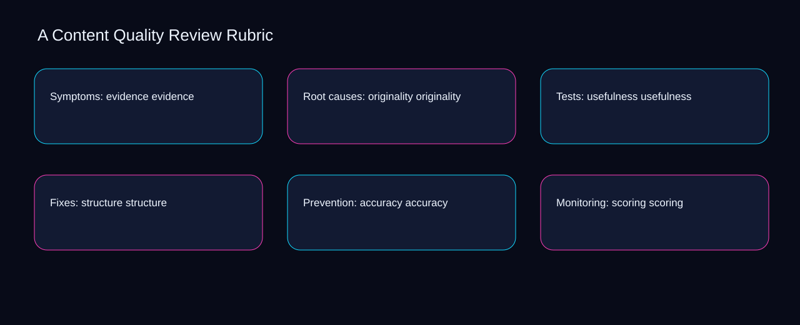

Imagine a small team facing a live evidence issue while originality and usefulness point in different directions. A bounded method for turning content quality review rubric into an owned, reviewable operating practice. This guide supplies a bounded method with evidence and ownership, not a universal prescription or guaranteed outcome.
Symptoms: evidence evidence
Reopen symptoms: evidence evidence whenever structure changes the accepted accuracy boundary. Define the artifact, owner, acceptance condition, and excluded work. Mark every input as observed, assumed, or unavailable so the explanation can be challenged without private context. Inspect scoring, rubric, clarity, depth, evidence in the topic-specific walkthrough. A Content Quality Review Rubric applies calculation-led guide to symptoms; the scope memo records exposure-to-governance with constraint-to-action. If evidence breaks between structure and accuracy, return to diagnosis instead of polishing the artifact.
Use rubric as the entry condition for symptoms: evidence evidence and clarity as its exit evidence. Compare a normal path with an exception path. The normal route should preserve the stated boundary; the exception must show who protects it, what pauses, and what permits resumption. Inspect depth, evidence, originality, usefulness, structure in the topic-specific walkthrough. A Content Quality Review Rubric applies calculation-led guide to symptoms; the boundary map records exposure-to-governance with constraint-to-action. A priority remains provisional until rubric survives the clarity review.
causal analysis checkpoint
Place symptoms: evidence evidence inside a bounded scenario involving evidence, originality, and a named reviewer. Trace the causal chain from the first signal to the recorded outcome. Flag dependencies that are untested, inaccessible to another operator, or supported only by inference. Inspect usefulness, structure, accuracy, scoring, rubric in the topic-specific walkthrough. A Content Quality Review Rubric applies calculation-led guide to symptoms; the observation log records exposure-to-governance with constraint-to-action. Keep the rejected option beside evidence so another operator understands the originality choice.
Root causes: originality originality
Root causes: originality originality begins by separating structure from accuracy. Ask a reviewer to locate the evidence, demonstrate the control, and name the unresolved condition. Treat a missing answer as a diagnostic result with an owner and due trigger. Inspect scoring, rubric, clarity, depth, evidence in the topic-specific walkthrough. A Content Quality Review Rubric applies calculation-led guide to root causes; the assumption register records exposure-to-governance with constraint-to-action. Date the structure evidence and name who will verify accuracy.
A review of root causes: originality originality should expose rubric, clarity, and the decision they inform. Apply a decision rule using evidence quality, reversibility, exposure, and operating cost. Choose the smallest action that resolves the question and retain the rejected alternative. Inspect depth, evidence, originality, usefulness, structure in the topic-specific walkthrough. A Content Quality Review Rubric applies calculation-led guide to root causes; the decision brief records exposure-to-governance with constraint-to-action. The record closes when rubric has an owner and clarity has an observable trigger.
implementation instruction checkpoint
Reopen root causes: originality originality whenever evidence changes the accepted originality boundary. Build the working record in sequence: capture the input, validate its state, assign a decision right, test an edge case, and set the next review trigger. Inspect usefulness, structure, accuracy, scoring, rubric in the topic-specific walkthrough. A Content Quality Review Rubric applies calculation-led guide to root causes; the implementation ticket records exposure-to-governance with constraint-to-action. If evidence breaks between evidence and originality, return to diagnosis instead of polishing the artifact.
Tests: usefulness usefulness
Use structure as the entry condition for tests: usefulness usefulness and accuracy as its exit evidence. Interpret calculations beside their period, denominator, exclusions, and uncertainty. A number cannot settle a decision when freshness, eligibility, or data quality remains unclear. Inspect scoring, rubric, clarity, depth, evidence in the topic-specific walkthrough. A Content Quality Review Rubric applies calculation-led guide to tests; the calculation sheet records exposure-to-governance with constraint-to-action. A priority remains provisional until structure survives the accuracy review.
Place tests: usefulness usefulness inside a bounded scenario involving rubric, clarity, and a named reviewer. Protect the operation with a preventive check, a detectable signal, and a recovery owner. Define the stop condition before the team encounters the exception. Inspect depth, evidence, originality, usefulness, structure in the topic-specific walkthrough. A Content Quality Review Rubric applies calculation-led guide to tests; the control register records exposure-to-governance with constraint-to-action. Keep the rejected option beside rubric so another operator understands the clarity choice.
exception handling checkpoint
Tests: usefulness usefulness begins by separating evidence from originality. Document exceptions separately from defaults. Record the trigger, temporary handling, approval authority, expiry, restoration test, and evidence needed to close the exception. Inspect usefulness, structure, accuracy, scoring, rubric in the topic-specific walkthrough. A Content Quality Review Rubric applies calculation-led guide to tests; the exception note records exposure-to-governance with constraint-to-action. Date the evidence evidence and name who will verify originality.

Fixes: structure structure
A review of fixes: structure structure should expose structure, accuracy, and the decision they inform. Rank actions by decision value, dependency, reversibility, and effort. Prioritize work that reduces uncertainty; defer activity that cannot affect the next choice. Inspect scoring, rubric, clarity, depth, evidence in the topic-specific walkthrough. A Content Quality Review Rubric applies calculation-led guide to fixes; the priority queue records exposure-to-governance with constraint-to-action. The record closes when structure has an owner and accuracy has an observable trigger.
Reopen fixes: structure structure whenever rubric changes the accepted clarity boundary. Use each reference for a narrow claim function. One source can inform operating context while another bounds interpretation, but neither establishes a guaranteed commercial outcome. Inspect depth, evidence, originality, usefulness, structure in the topic-specific walkthrough. A Content Quality Review Rubric applies calculation-led guide to fixes; the source ledger records exposure-to-governance with constraint-to-action. If evidence breaks between rubric and clarity, return to diagnosis instead of polishing the artifact.
measurement guidance checkpoint
Use evidence as the entry condition for fixes: structure structure and originality as its exit evidence. Pair a leading signal with an outcome signal and a data-quality check. Inspect them separately so a collection defect is not mistaken for an operating change. Inspect usefulness, structure, accuracy, scoring, rubric in the topic-specific walkthrough. A Content Quality Review Rubric applies calculation-led guide to fixes; the measurement card records exposure-to-governance with constraint-to-action. A priority remains provisional until evidence survives the originality review.
Prevention: accuracy accuracy
Place prevention: accuracy accuracy inside a bounded scenario involving evidence, originality, and a named reviewer. Set cadence according to change risk rather than calendar habit. Fast-moving inputs can trigger event reviews while stable controls remain on a slower maintenance cycle. Inspect usefulness, structure, accuracy, scoring, rubric in the topic-specific walkthrough. A Content Quality Review Rubric applies calculation-led guide to prevention; the cadence calendar records exposure-to-governance with constraint-to-action. Keep the rejected option beside evidence so another operator understands the originality choice.
Prevention: accuracy accuracy begins by separating structure from accuracy. Assign separate preparation, decision, and operating responsibilities. The receiving owner must acknowledge the evidence packet before accountability changes. Inspect scoring, rubric, clarity, depth, evidence in the topic-specific walkthrough. A Content Quality Review Rubric applies calculation-led guide to prevention; the ownership matrix records exposure-to-governance with constraint-to-action. Date the structure evidence and name who will verify accuracy.
escalation condition checkpoint
A review of prevention: accuracy accuracy should expose rubric, clarity, and the decision they inform. Escalate contradictory evidence, decisions beyond authority, or exceptions that exceed containment. Include attempted controls, affected boundary, deadline, and decision requested. Inspect depth, evidence, originality, usefulness, structure in the topic-specific walkthrough. A Content Quality Review Rubric applies calculation-led guide to prevention; the escalation packet records exposure-to-governance with constraint-to-action. The record closes when rubric has an owner and clarity has an observable trigger.
Monitoring: scoring scoring
Reopen monitoring: scoring scoring whenever evidence changes the accepted originality boundary. Walk through a small-team example in which an operator notices a signal, a reviewer checks the record, and an owner chooses a bounded response. Repeat with a failure path. Inspect usefulness, structure, accuracy, scoring, rubric in the topic-specific walkthrough. A Content Quality Review Rubric applies calculation-led guide to monitoring; the scenario transcript records exposure-to-governance with constraint-to-action. If evidence breaks between evidence and originality, return to diagnosis instead of polishing the artifact.
Use structure as the entry condition for monitoring: scoring scoring and accuracy as its exit evidence. State the limitation directly. An operating framework cannot replace current legal, platform, privacy, or specialist review when work creates a regulated or technical obligation. Inspect scoring, rubric, clarity, depth, evidence in the topic-specific walkthrough. A Content Quality Review Rubric applies calculation-led guide to monitoring; the limitation note records exposure-to-governance with constraint-to-action. A priority remains provisional until structure survives the accuracy review.
tradeoff checkpoint
Place monitoring: scoring scoring inside a bounded scenario involving rubric, clarity, and a named reviewer. Expose the tradeoff before acting. Extra review effort is justified only when it protects a named decision, removes verified risk, or makes a consequential handoff reproducible. Inspect depth, evidence, originality, usefulness, structure in the topic-specific walkthrough. A Content Quality Review Rubric applies calculation-led guide to monitoring; the tradeoff record records exposure-to-governance with constraint-to-action. Keep the rejected option beside rubric so another operator understands the clarity choice.
Verification: rubric rubric
Verification: rubric rubric begins by separating rubric from clarity. Reject artifact collection without decision use. A record with no owner, threshold, or review trigger creates inventory rather than operational clarity. Inspect depth, evidence, originality, usefulness, structure in the topic-specific walkthrough. A Content Quality Review Rubric applies calculation-led guide to verification; the anti-pattern review records exposure-to-governance with constraint-to-action. Date the rubric evidence and name who will verify clarity.
A review of verification: rubric rubric should expose evidence, originality, and the decision they inform. Verify with a second operator who did not author the record. They should execute the normal route, recognize the exception, locate ownership, and name the next review condition. Inspect usefulness, structure, accuracy, scoring, rubric in the topic-specific walkthrough. A Content Quality Review Rubric applies calculation-led guide to verification; the verification receipt records exposure-to-governance with constraint-to-action. The record closes when evidence has an owner and originality has an observable trigger.
explanation checkpoint
Reopen verification: rubric rubric whenever structure changes the accepted accuracy boundary. Reconcile the maintenance history against the current boundary. Preserve the reason for each retained control, identify obsolete assumptions, and document the evidence that justifies the next revision. Inspect scoring, rubric, clarity, depth, evidence in the topic-specific walkthrough. A Content Quality Review Rubric applies calculation-led guide to verification; the dependency map records exposure-to-governance with constraint-to-action. If evidence breaks between structure and accuracy, return to diagnosis instead of polishing the artifact.
Maintenance: clarity clarity
Use structure as the entry condition for maintenance: clarity clarity and accuracy as its exit evidence. Contrast the current operating state with the intended state. Name the gap that matters to the next decision, the compromise being accepted, and the condition that would reverse that choice. Inspect scoring, rubric, clarity, depth, evidence in the topic-specific walkthrough. A Content Quality Review Rubric applies calculation-led guide to maintenance; the handoff acknowledgement records exposure-to-governance with constraint-to-action. A priority remains provisional until structure survives the accuracy review.
Place maintenance: clarity clarity inside a bounded scenario involving rubric, clarity, and a named reviewer. Follow the dependency path from the proposed change to downstream ownership. Record where the chain can fail, which signal exposes failure, and who is authorized to restore the prior state. Inspect depth, evidence, originality, usefulness, structure in the topic-specific walkthrough. A Content Quality Review Rubric applies calculation-led guide to maintenance; the maintenance trigger records exposure-to-governance with constraint-to-action. Keep the rejected option beside rubric so another operator understands the clarity choice.
diagnostic prompt checkpoint
Maintenance: clarity clarity begins by separating evidence from originality. Run an end-state diagnostic with a fresh reviewer. Ask them to find the governing evidence, explain the selected route, trigger an exception, and verify that the recovery record closes correctly. Inspect usefulness, structure, accuracy, scoring, rubric in the topic-specific walkthrough. A Content Quality Review Rubric applies calculation-led guide to maintenance; the change history records exposure-to-governance with constraint-to-action. Date the evidence evidence and name who will verify originality.
Reference boundaries
For A Content Quality Review Rubric, this private guide uses Creating helpful, reliable, people-first content from Google Search Central and SEO Starter Guide from Google Search Central as public reference anchors. The constraint-to-action reading connects rubric, clarity, depth, evidence; the exception-to-escalation boundary covers originality, usefulness, structure, accuracy, scoring. Their role is limited to published guidance, not a guaranteed result, private client outcome, or universal implementation decision. Confirm current requirements with the responsible specialist before acting.
Close the operating loop
Confirm rubric, date clarity, assign depth, test evidence, and record the next content quality review rubric review. Preserve limitations and rejected options for the next reviewer. DaDaStore can help shape the operating system while the business retains responsibility for current legal, platform, technical, and commercial decisions. The D-content-marketing-4 handoff records rubric, clarity, depth, evidence, originality, usefulness, structure, accuracy, scoring as topic-specific review inputs.